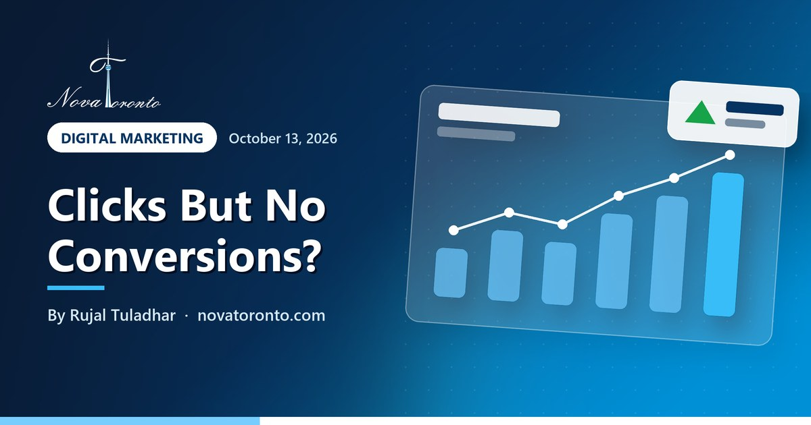

Google Ads clicks but no conversions? A GTA troubleshooting list
Published October 13, 2026 • By Rujal Tuladhar

Your Google Ads dashboard shows clicks, the budget is being spent, and the Conversions column says zero. That usually means one of two things: the ads really are not producing customers, or they are and Google Ads cannot see it. Before you change a single bid, you need to know which.
This is the order I work through when a Toronto or GTA account shows clicks without conversions. Every setting named here was checked against Google's own help pages on October 13, 2026. Work top to bottom: the first two checks catch the most common problems, and they cost nothing.
Calls count too
Calls from ads and from your website can be tracked as conversions
Read the search terms
Negatives do not cover close variants, plurals or synonyms
Presence, not interest
The default location option also reaches people outside the GTA
Judge over 1-2 cycles
Smart Bidding needs a few conversion cycles before you can judge it
Google Ads clicks but no conversions? A GTA troubleshooting list at a glance — the short version.
1. Prove conversion tracking works, including phone calls
Google describes conversions as valuable actions people take after interacting with your ad. Its conversion tracking overview lists website actions such as purchases and sign-ups (tracked with the Google tag or Google Analytics), phone calls, app actions, and imported offline conversions. If none of those is set up, or the tag sits on the wrong page, the column stays at zero no matter how many customers you get.
For most GTA service businesses the gap is the phone. Google's call conversion guide covers calls from ads that carry call or location assets, calls to a number shown on your website, and clicks on a number on your website. A call only counts when it lasts longer than a minimum duration you set, so pick a length that separates real enquiries from hang-ups.
A simple test: submit your own contact form and call from a mobile ad, then check a day later whether both appear. Also mark only real actions as primary conversions. A page view or a scroll will make results look better without bringing in a single job.
2. Read the search terms report and add negatives
Keywords are what you bid on; search terms are what people actually typed. The search terms report lists the searches that triggered your ads and got impressions and clicks. Google leaves out terms with too little activity to protect privacy, so you will not see every query, but you will see the big leaks.
Look for searches that will never buy: job seekers ("plumber jobs Mississauga"), do-it-yourself searches, free or cheap versions, competitors' names, and services you do not offer. Each one becomes a negative keyword.
Two rules from Google's negative keyword guide catch people out. Negative keywords will not match close variants or other expansions, and you need to add synonyms and singular or plural versions yourself. So "job" and "jobs" are two negatives, not one.
3. Check the location option: presence versus interest
This setting hides under Locations, then Location options. Google's location targeting help says the default and recommended option, Presence or interest, reaches people who are likely to be in or regularly in your locations and also people who have shown interest in them. The other option, Presence, shows ads to people likely to be located, or regularly located, in your targeted area.
For a business that serves customers in person, such as a Brampton renovator, a Scarborough clinic or a Vaughan cleaner, someone far away who is only reading about Toronto is rarely a customer. Switch to Presence, then open the locations report to see where clicks came from.
4. Make the landing page match the ad
Google describes landing page experience as how relevant and useful your page will be to the people who click your ad, and advises a page that is clear, useful and related to the keyword and what people are searching for. If the ad says "emergency furnace repair Etobicoke" and the click lands on a general home page, many visitors leave.
Check, on your phone, that the page repeats the service and area from the ad, shows a phone number you can tap, has a short form near the top, and loads quickly. For speed, web.dev sets the good thresholds for Core Web Vitals: Largest Contentful Paint within 2.5 seconds, Interaction to Next Paint of 200 milliseconds or less, and Cumulative Layout Shift of 0.1 or less. Google's page experience guidance also asks whether pages display well on mobile and avoid intrusive interstitials such as full-screen pop-ups.
5. Set a target CPA your numbers can support
Target CPA is the bid strategy that aims for as many conversions as possible near a cost per conversion you set. Google's Target CPA page says conversion tracking must be set up first. When you have history, the recommended target is your average CPA from the last 30 days, adjusted for conversion delays. A target set too low can make the system skip clicks that would have converted, which can reduce total conversions.
Work out your own ceiling before you pick a number. An illustrative example, not a benchmark: if a job earns you $400 in gross profit and you win one job for every four enquiries, a lead is worth up to $100 to you before you lose money. A $30 target would likely starve the campaign; a $150 target would buy leads you cannot afford.
6. When to pause and when to wait
Smart Bidding needs time. Google's learning period article says it can take a few conversion cycles, typically one to two, for a bid strategy to calibrate, where a conversion cycle is the time it takes for a click to result in a conversion. Its measurement tips suggest judging over at least two full conversion cycles, or over longer periods such as a month or at least 50 conversions, and allowing for conversion delay, so the last few days often look worse than they are.
My rule of thumb:
- Pause now if tracking is broken, if the search terms are mostly irrelevant, or if spend has passed what you could afford for two or three conversions with none recorded and no calls coming in.
- Wait if you changed the bid strategy, budget or target in the last cycle or two, or if leads are arriving by phone but are not tracked yet (fix the tracking while you wait).
- Change one thing at a time, so you know what worked.
The bottom line
Clicks without conversions is usually a measurement problem first and an advertising problem second. Confirm forms and calls are tracked, cut wasted search terms, switch to Presence if you serve the GTA in person, make the landing page match the ad, and set a target CPA your margins support. Then give the account a full conversion cycle or two before you judge it.
If you would rather have someone else work through this list, our digital marketing service sets up tracking and manages Google Ads for GTA businesses. Most local businesses start around $500 to $1,500 a month in ad spend, and we build the plan around your budget on a free call. For background, see how much a Toronto business should spend on Google Ads, Google Ads management fees in Canada and whether to run Google or Meta ads first.
Common questions
Why are my Google Ads getting clicks but no conversions?
The most common causes are broken or missing conversion tracking (especially phone calls), irrelevant search terms, location settings that reach people outside your area, a landing page that does not match the ad, and a target CPA set too low. Check them in that order.
How long should I wait before pausing Google Ads with no conversions?
Google says a bid strategy typically needs one to two conversion cycles to calibrate, and suggests judging results over at least two full cycles or a longer period such as a month. If tracking is broken or the search terms are mostly irrelevant, fix or pause right away instead of waiting.
Do phone calls count as Google Ads conversions?
Yes, if you set them up. Google Ads can track calls from ads with call or location assets, calls to a number shown on your website, and clicks on a number on your website. A call counts when it lasts longer than a minimum duration you choose.
Should I use presence or interest location targeting in Google Ads?
Presence or interest is Google's default, and it can reach people who have only shown interest in your area. Local service businesses in the GTA usually do better with Presence, which targets people likely to be in or regularly in the locations you choose.
Want this working in your business?
Book a free 30-minute call and we'll map out which of these would actually save you time and win you customers.
Book a Free ConsultationNew to AI? Take our free 7-lesson AI course for beginners.
Sources: Google Ads Help: About conversion tracking • Google Ads Help: Set up phone call conversion tracking • Google Ads Help: About the search terms report • Google Ads Help: About negative keywords • Google Ads Help: Location targeting options • Google Ads Help: Landing page experience definition • Google Ads Help: About Target CPA bidding • Google Ads Help: Duration of the learning period • Google Ads Help: Tips on measuring Smart Bidding performance • web.dev: Web Vitals • Google Search Central: Understanding page experience